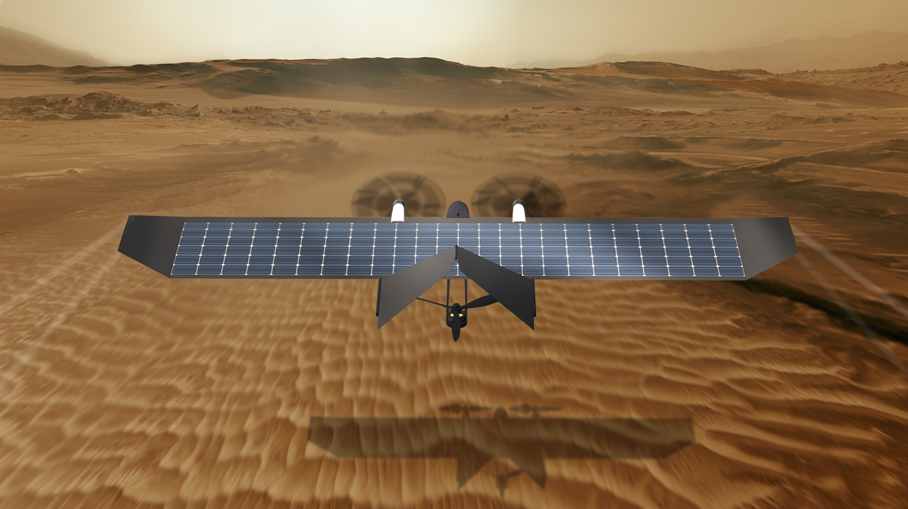

Analog mission at the MDRS Mars analog station Moab desert, Utah, USA 24 April - 9 May 2021
The mission
Mars is an incredibly harsh environment: global-covering dust storms, toxic terrain, thin atmosphere, extremely low temperatures. If we want to push the concept of human colonization of the red planet, much more research needs to be done on the adaptation of human physiology to such hard conditions. After 6 months of travel in zero-g condition and having dealt with the shock of a planetary reentry and landing, the first crew on Mars will face the challenge of recovery and rehabilitation, but also the need to assess and mitigate independently any possible health emergency.
To enable these opportunities, we are organizing SMOPS (Space Medicine OPerationS), an analog mission that will take place between April 24th and May 9th at the MDRS (Mars Desert Research Station), a research facility owned by The Mars Society in the Moab desert, Utah. For two weeks, our analog astronauts will conduct different experiments and test different operational scenarios to collect data about the health risk mitigation strategies we could face during a human mission to Mars.
The conditions offered by the MDRS are in many ways similar to the ones that can be found in a possible Mars habitat: desertic environment, crew isolation, limited living spaces and resources (water and food), local energy (solar panels) and food production (greenhouse). That will allow the astronauts to simulate, as best as we can on Earth, the difficulties that human crews will face on the martian surface.
The Crew
Paolo is a PhD Candidate at ISAE-Supaero. His main research fields include space mission design, space mechanics and orbital debris.
Vittorio is a Space Architect from Italy. He received a B.Sc. in Architectural Science and a M.Arch. in Architectural Design from the IUAV of Venice and a M.Sc in Space Architecture and Aerospace Engineering from University of Houston, TX. He works as project manager at DOME, a research group focused on the development of drone assets for the Mars exploration, and his past experince include the work for an Aerospace Engineering Research Group in Padova, thanks to which he collaborated with ESA, DLR and SNSB to develop a deployable antenna for orbital and suborbital applications, tested in stratosphere. His research field can be identified in the development of orbital and deep Space Habitats and automation of space processes through AI and robotics. Sailing Skipper since 2003, with more than 30.000 nautical miles, drone pilot, radio operator and Scuba diver, he is also member of SATC (Space Architecture Technical Committee), SGAC (Space Generation Advisory Council) and OeWF (Austrian Space Forum).
Research

Aerial drone technology has considerably evolved in the past years, thanks to the increasing number of potential applications. Hardware miniaturization and deep-learning algorithms brought this technology to a fundamental role in high-risk scenarios. Mars, due to its geological and atmospheric properties, represents a totally new ground to expand the boundaries of this technology. Aerial drones can become a fundamental subsystem of human activities on Mars, and are especially suitable for the use as long-range, fast-response healthcare providers on the martian surface (as on earth): logistics, safety inspections, search and rescue missions and medical devices deployment can be safely left to swarms of autonomous flying drones. We will test different hardware and scenarios to validate our researches.
Our Sponsors
SMOPS is a non-profit research mission, fueled by private research funds from our sponsors. The SMOPS Crew is incredibly appreciative of the support of:
If you are interested in contribute to our field mission or you want your research objectives to be included in our experiment schedule, contact us!
News
The new mission logo was designed and it will represent all the elements that matter to the mission.
Contact
For any question, press release or sponsorship inquiry, you can contact us at: